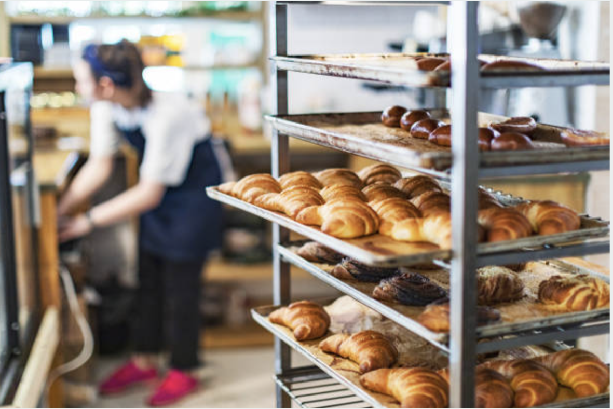
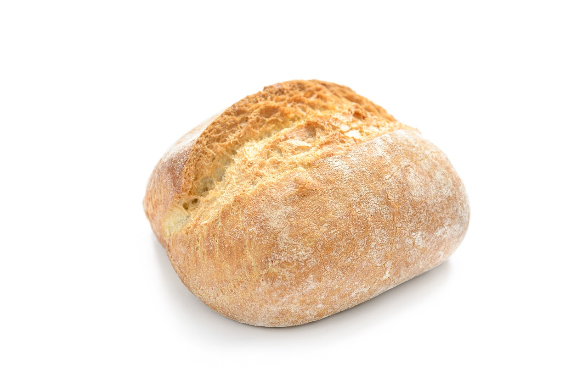

- 
Concept

「ふわっと広がる幸せ、やさしいひととき」
「ふわりベーカリー」は、心も体もほっとするようなふんわり柔らかなパンが中心です。乳製品や国産小麦にこだわり、余計な添加物を使わずに 素材本来の甘みや美味しさを引き出しています。
Menu

小さなお子様からお年寄りまで、幅広い世代に楽しんでもらえるパンを提供。
シンプルで毎日食べたくなるようなラインナップを揃えています。

- 
Recommend
ふわりクロワッサン
ふわりベーカリー自慢の「ふわりクロワッサン」は、表面はサクサク、中はふんわり軽い食感が特徴。たっぷりのバターを丁寧に折り込んで焼き上げ、香ばしい香りが広がります。
Access
- OPEN :
- 月〜土 7:00〜19:00
- CLOSED :
- 日・祝
- ADDRESS :
-
Google Maps
123-4567 大阪府門真市... - TEL :
- 000-0000-0000
- MAIL :
- fuwari.info@gmail.com